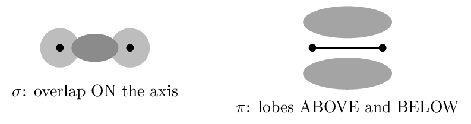

This is the thinnest chapter in the book for AP purposes. Only §9.1 is examinable — hybridization and \(\sigma\)/\(\pi\) bonding, which are CED 2.7.
§9.2–9.5 develop molecular orbital theory — MO diagrams, bond order from filled orbitals, homonuclear and heteronuclear diatomics. None of it is on the current CED. Rather than pretend otherwise, this chapter is built as two examinable blocks plus one clearly marked enrichment block. Work Blocks 1–2 properly; treat Block 3 as optional reading.One more scope note: the CED assesses only sp, sp\(^2\), and sp\(^3\). Zumdahl's §9.1 also covers dsp\(^3\) and d\(^2\)sp\(^3\) for expanded octets — and he himself notes that this model “does not give an accurate picture” and that newer work does not use \(d\) orbitals at all. You still assign shapes to \(\ce{PCl5}\) and \(\ce{SF6}\) with VSEPR; you are simply not asked for their hybridization.
Hybridization and the Localized Electron Model Zumdahl §9.1
- Explain why hybrid orbitals are proposed at all.
- Assign sp, sp\(^2\), or sp\(^3\) from the electron-domain count.
Read: Zumdahl §9.1 • PDF pp. 455–466
- Electron domains around C in \(\ce{CH4}\): 4
- Geometry of \(\ce{BF3}\): trigonal planar
- Does a double bond count as one domain or two? one
INSTRUCTION A • The problem hybridization solves 25 min
Why plain atomic orbitals are not enough ZUM §9.1
SP 1Carbon's ground-state configuration is \([\ce{He}]\,2s^2\,2p^2\) — one filled \(s\) orbital and two half-filled \(p\) orbitals, pointing at 90\(^\circ\) to each other. Taken literally, that predicts carbon should form two bonds at 90\(^\circ\).
Methane is observed to have four identical C–H bonds at 109.5\(^\circ\). The atomic-orbital picture is simply wrong about the molecule.
Zumdahl's resolution, and the key idea of the whole chapter: start with the molecule, not the atoms. A molecule's tendency to minimize its energy matters more than preserving the orbital arrangement the free atom happened to have. So we assume the atom hybridizes — its \(2s\) and three \(2p\) orbitals combine into four identical orbitals pointing at the corners of a tetrahedron.
Hybridization is a model built to fit observed geometry, not a physical event that happens to atoms. Nothing “hybridizes” in time.
The three hybridizations you are responsible for
| Domains | Hybrid | Built from | Geometry | Leftover \(p\) |
|---|---|---|---|---|
| 2 | sp | one \(s\), one \(p\) | linear | 2 |
| 3 | sp\(^2\) | one \(s\), two \(p\) | trigonal planar | 1 |
| 4 | sp\(^3\) | one \(s\), three \(p\) | tetrahedral | 0 |
The count is the whole trick: the number of hybrid orbitals always equals the number of atomic orbitals combined, and equals the number of electron domains.
GUIDED PRACTICE • Zumdahl's three-step procedure 15 min
Always in this order:- Draw the Lewis structure.
- Determine the electron-pair arrangement using VSEPR.
- Assign the hybrid orbitals that match.
- C in \(\ce{CH4}\): 4 domains \(\to\) sp\(^3\)
- B in \(\ce{BF3}\): 3 domains \(\to\) sp\(^2\)
- C in \(\ce{CO2}\): 2 domains \(\to\) sp
- N in \(\ce{NH3}\): 4 domains (1 LP) \(\to\) sp\(^3\)
- O in \(\ce{H2O}\): 4 domains (2 LP) \(\to\) sp\(^3\)
Count domains, not bonds. Water's oxygen has only two bonds but two lone pairs as well — four domains, so sp\(^3\). Students who count bonds report sp for water and get both the hybridization and the bent geometry wrong.
INSTRUCTION B • The model's limits 20 min
Where the simple picture strains ZUM §9.1
SP 6For \(\ce{PCl5}\), five electron pairs require a trigonal bipyramidal arrangement, and Zumdahl introduces dsp\(^3\) hybridization to supply five orbitals. But he immediately adds a caution worth taking seriously:
Zumdahl's own words are that this model “does not give an accurate picture of the actual bonding,” and that recent research shows a better model does not use \(d\) orbitals at all. He keeps it only for convenience.
This is a good general lesson: the simple models in an introductory course are chosen for usefulness, not truth, and a well-taught course tells you which is which. It is also why the CED stops at sp\(^3\) — you assign \(\ce{PCl5}\) and \(\ce{SF6}\) their shapes with VSEPR and leave their hybridization alone.
APPLICATION • Assign hybridization in real molecules 20 min
- In methanol, \(\ce{CH3OH}\), give the hybridization of both the carbon and the oxygen, with domain counts.
- In formaldehyde, \(\ce{H2CO}\), give the carbon's hybridization and predict the H–C–H angle.
- \(\ce{SO2}\) and \(\ce{SO3}\) both have sulfur as the central atom, yet only one is bent. Give each hybridization and explain.
Both \(\ce{CH4}\) and \(\ce{H2O}\) have sp\(^3\) hybridized central atoms, yet their bond angles differ. Explain.
Sigma and Pi Bonds Zumdahl §9.1
- Distinguish \(\sigma\) from \(\pi\) bonds by how orbitals overlap.
- Count \(\sigma\) and \(\pi\) bonds, and explain restricted rotation.
Read: Zumdahl §9.1 • PDF pp. 455–466
- Hybridization of C in \(\ce{C2H6}\): sp\(^3\)
- How many hybrid orbitals does sp\(^2\) produce? 3
- Leftover unhybridized \(p\) orbitals on an sp carbon: 2
INSTRUCTION A • Two ways for orbitals to overlap 25 min
Sigma and pi ZUM §9.1
SP 1| \(\sigma\) (sigma) bond | \(\pi\) (pi) bond | |
|---|---|---|
| Overlap | head-on, along the internuclear axis | side-by-side, above and below the axis |
| Built from | hybrid orbitals | leftover unhybridized \(p\) orbitals |
| Electron density | concentrated between the nuclei | in two lobes off the axis |
| Rotation | free | blocked |

Counting rule
- Single bond \(=\) 1 \(\sigma\)
- Double bond \(=\) 1 \(\sigma\) + 1 \(\pi\)
- Triple bond \(=\) 1 \(\sigma\) + 2 \(\pi\)
The first bond between two atoms is always \(\sigma\); every additional bond is \(\pi\). That is because head-on overlap is more effective than side-by-side, so it happens first — and it is also why \(\pi\) bonds are generally weaker and more reactive.
GUIDED PRACTICE • Count them 15 min
- \(\ce{C2H6}\) (ethane): 7 \(\sigma\), 0 \(\pi\)
- \(\ce{C2H4}\) (ethene): 5 \(\sigma\), 1 \(\pi\)
- \(\ce{C2H2}\) (ethyne): 3 \(\sigma\), 2 \(\pi\)
- \(\ce{HCN}\): 2 \(\sigma\), 2 \(\pi\)
- \(\ce{N2}\): 1 \(\sigma\), 2 \(\pi\)
INSTRUCTION B • Why double bonds cannot rotate 20 min
Restricted rotation ZUM §9.1
SP 6A \(\sigma\) bond is cylindrically symmetric about the internuclear axis, so the two ends can spin freely — rotation costs essentially nothing.
A \(\pi\) bond is different. Its two lobes must stay parallel to overlap at all. Rotating one end by 90\(^\circ\) would set the \(p\) orbitals perpendicular, destroying the overlap and breaking the bond. That takes a large amount of energy, so at ordinary temperatures a double bond is rigid.
In \(\ce{C2H4Cl2}\) with one Cl on each carbon, the two chlorines can sit on the same side of the double bond (cis) or opposite sides (trans). Because the \(\pi\) bond blocks rotation, these are different compounds — separable, with different melting points and dipole moments.
Do the same with ethane (\(\ce{C2H4Cl2}\) with a single C–C bond) and the two arrangements interconvert freely billions of times a second. They are not distinguishable substances at all.
APPLICATION • Structure and bonding together 20 min
- For \(\ce{H2C=CH-C#N}\): give the hybridization of each carbon and the total \(\sigma\) and \(\pi\) counts.
- Explain why ethyne (\(\ce{C2H2}\)) is linear while ethene (\(\ce{C2H4}\)) is planar but not linear.
A molecule has 4 \(\sigma\) and 2 \(\pi\) bonds between its heavy atoms. What kind of multiple bonding must it contain?
ENRICHMENT: The Molecular Orbital Model Zumdahl §9.2–9.3 — NOT on the CED
Nothing in this block is assessed on the AP exam. It is included because molecular orbital theory answers one question the Lewis model cannot — and knowing where a model fails is worth an hour of anyone's time. Skip it entirely without penalty.
- Explain what a molecular orbital is and compute bond order.
- Describe the oxygen paramagnetism problem and its resolution.
Read: Zumdahl §9.2–9.3 • PDF pp. 466–476
INSTRUCTION A • Orbitals that belong to the molecule 25 min
Bonding and antibonding ZUM §9.2
SP 1The localized electron model treats bonds as belonging to pairs of atoms. Molecular orbital theory instead combines atomic orbitals into orbitals that span the whole molecule.
Combining two atomic orbitals always produces two molecular orbitals:- a bonding MO — lower in energy, with electron density between the nuclei;
- an antibonding MO (\(\sigma^*\), \(\pi^*\)) — higher in energy, with a node between the nuclei.
A bond order of zero means no bond forms — which is exactly why \(\ce{He2}\) does not exist.
GUIDED PRACTICE • Bond order practice 15 min
- \(\ce{H2}\): 2 bonding, 0 antibonding \(\to\) bond order 1
- \(\ce{He2}\): 2 bonding, 2 antibonding \(\to\) bond order 0
- \(\ce{O2}\): 10 bonding, 6 antibonding \(\to\) bond order 2
- \(\ce{N2}\): 10 bonding, 4 antibonding \(\to\) bond order 3
Zumdahl notes the payoff: across the period-2 diatomics, as MO bond order rises, bond energy increases and bond length decreases — strong evidence the model is capturing something real.
INSTRUCTION B • The oxygen problem 20 min
Where Lewis structures fail ZUM §9.3
SP 6Draw the Lewis structure of \(\ce{O2}\) and you get \(\ce{O=O}\) with two lone pairs on each oxygen — every electron paired. That structure predicts oxygen should be diamagnetic, weakly repelled by a magnet.
Liquid oxygen is paramagnetic. Pour it between the poles of a magnet and it visibly sticks. It has two unpaired electrons.
The Lewis model cannot account for this. It is not a small discrepancy or a measurement issue — the model simply gets it wrong.
The MO model resolves it cleanly. Filling oxygen's molecular orbitals places the last two electrons in separate degenerate \(\pi^*\) orbitals, with parallel spins by Hund's rule. Result: bond order 2 (agreeing with the double bond) and two unpaired electrons, matching the magnetic evidence exactly.
APPLICATION • Comparing the two models 20 min
- State one thing the localized electron model does better than MO theory, and one thing MO does better.
- Both models agree that \(\ce{O2}\) has a bond order of 2. Why is that agreement reassuring rather than trivial?
Why does \(\ce{He2}\) not exist, in MO terms?